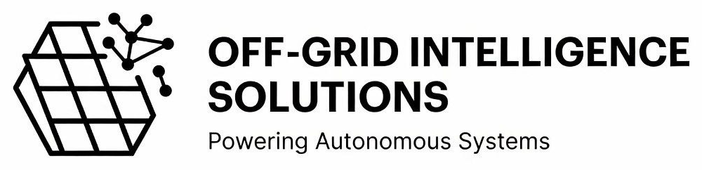

01
Cabin & shed systems
Weekend places, hunting cabins, tiny homes, and outbuildings that need clean power without waiting on a power-company trench.
Off-Grid Intelligence Solutions (OGI) designs practical off-grid solar for cabins and remote land, and sets up agentic AI systems that help owner-operated small businesses run day to day with less admin friction.
Powering Autonomous Systems
Cabin-ready solar packages
SMB agentic AI setups
Local model hosting path

Built for Southern Utah land, cabins, sheds, and people who want systems that stand on their own.
Start small for lights, charging, and a fridge. Grow into full-time cabin living. No jargon maze — clear packages with room to expand.
Weekend places, hunting cabins, tiny homes, and outbuildings that need clean power without waiting on a power-company trench.
Modern LiFePO4 storage, pure sine power, and 48V architecture so the system feels solid at night — not fragile.
Begin with what you need now. Add panels and batteries later as the property, tools, and lifestyle grow.
Always-on agentic systems for small, owner-run companies — especially data-heavy shops that want real help with the work of running the business.
We scope the workflows in plain English first, then set up the agent on hardware that fits your business — Apple, Windows/Dell, or Raspberry Pi Linux.
Want more control over sensitive work? Ask about local model options and private hosting so more of your business data stays on systems you control.
Pricing bands for planning. Final quotes depend on site, loads, travel, and equipment availability.
$3,000–$6,000
Lights, charging, small fridge, and basic daily loads for part-time places.
$6,000–$12,000
Real daily living loads for small homes and full-time cabin use.
$12,000–$20,000+
Larger homes, higher demand, multi-building, or custom ranch work.
Choose Apple, Microsoft/Dell, or Raspberry Pi Linux — then Low, Medium, or High. Scoped to the business work you actually need handled.
Agent builds for owner-operated small businesses that want real company work handled. Planning prices cover hardware path + setup. Final quotes depend on exact gear, workflows, travel, and scope.
Quiet, reliable always-on agent hosts for people already in Apple’s world — iPhone, iPad, Mac, HomeKit-friendly homes.
$1,500–$3,000
Entry Mac mini as a dedicated business agent box. Core owner workflows: inbox, calendar, document drafts, basic bookkeeping help, and a clean handoff so the owner can run it.
$3,000–$6,000
Stronger Mac mini for daily company operations. Multiple business workflows, website/content help, accounting/admin support, local files, and more autonomous routines without babysitting every step.
$6,000–$12,000+
Top Mac mini / Studio-class host for heavier local models, multi-agent business orchestration, and always-on company systems with stronger private/local capacity.
Windows-first agent hosts on compact Dell mini PCs — strong for Microsoft 365, OneDrive, Teams-adjacent workflows, and mixed-office shops.
$1,000–$2,500
Compact Dell mini PC for a single always-on business agent. Strong first step for Windows / Microsoft 365 shops that want clean basic company automation.
$2,500–$5,000
Higher-spec Dell mini for real daily company load: document pipelines, accounting/admin support, website/content help, Microsoft 365 workflows, and steadier unattended runs.
$5,000–$10,000+
Performance mini / workstation-class Dell host for multi-agent company operations, heavier local models, and always-on office or shop control.
Low-power Linux agents on Raspberry Pi — ideal for shops, offices, cabins, and edge sites where watts, silence, and local control matter.
$500–$1,500
Single Raspberry Pi as a thrifty always-on node. Basic business agent tasks, status checks, lightweight local control, and simple automations.
$1,500–$3,000
Pi 5 with fast storage and a stronger service stack. More business services, local dashboards, camera or sensor hooks, and better offline / local-first resilience.
$3,000–$7,000+
Multi-Pi / edge cluster path for distributed local intelligence — redundant services, heavier local jobs, and serious onsite business or property automation.
Tell us your business type, data sensitivity, devices, and what you want automated. We’ll recommend Apple, Dell/Windows, or Raspberry Pi Linux — then Low, Medium, or High — with a firm quote before any hardware is bought.
Run open or closed models on servers you control — onsite at your business, or on a managed private host — so more sensitive work stays off public cloud AI services.
Property power, small-business AI, local model hosting, or a combined setup if that fits.
Solar: Essential, Comfort, Independence. AI: Apple, Dell/Microsoft, or Pi Linux at Low, Medium, or High.
Clear equipment, labor, travel, and what “done” looks like before money moves.
Power systems installed and commissioned. Agents configured, tested, and handed off with a walkthrough.
OGI is built for real property needs and real small businesses: Southern Utah cabins and land, plus owner-operated companies that want agentic AI without the hype.
Founded by Isaac Shinkle — career wildland firefighter, hands-on with solar/battery systems, and builder of practical AI agent workflows for business operations.
Washington, Kane, Iron counties
Start small, expand cleanly
Solar power + SMB agentic AI
Clear packages, clear handoff
Tell us what you need: cabin/off-grid power, agentic AI for your small business, or local model hosting.
Business email: offgridintelligencesolutions@gmail.com · offgridintelligencesolutions.com